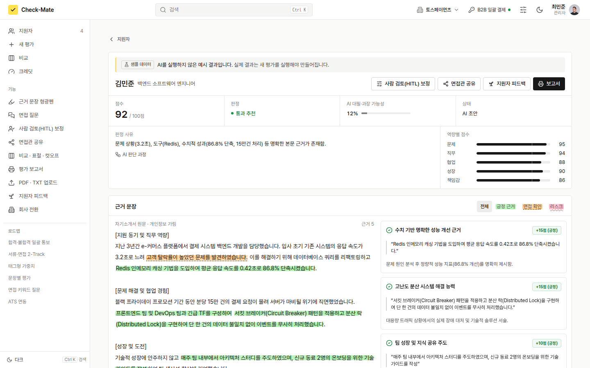

Check-Mate
올인원 HR AX 채용 코파일럿"파편화된 채용 도구를 하나로 통합하고, 근거 기반 AI 검증으로 서류 검토 90%를 단축하는 올인원 채용 플랫폼"


스타트업 개발팀 김과장의 야근 탈출기 (도입 배경)

"ChatGPT 복붙 자소서 300장... 언제 다 읽고 검증하지?"
"100% 개발했다더니 막상 물어보니 아무것도 모르네?"
"김과장! 여기 넣으면 1.5분 만에 AI 검증부터 질문까지 끝이야!"
"서류 검토 90% 단축! 면접 질문까지 한 방에 해결!"
올인원 유저 플로우 & AS-IS vs TO-BE 비교
| 채용 단계 | AS-IS (기존 파편화 수작업) | TO-BE (Check-Mate 올인원) | 혁신 결과 |
|---|---|---|---|
| 1. 서류 접수·보호 | 이메일·노션 분산 저장, 수작업 이름·학교 가리기 | 단일 대시보드 접수 즉시 7종 PII 로컬 자동 마스킹 | 100% 블라인드 |
| 2. 서류 팩트체크 | 건당 15분 정독, ChatGPT 복붙 과장 검증 실패 | 4대 에이전트 교차 감사 + Fuzzy 원문 오프셋 바인딩 | 90% 시간 단축 |
| 3. 면접 준비·협업 | 질문지 수기 작성, 종이 출력·볼펜 채점 후 엑셀 취합 | 과장 타깃 질문 3종 자동 + 암호화 링크 실시간 채점 | 취합 지연 0초 |
시스템 아키텍처 & 기술 스택
4대 멀티에이전트 교차 감사 (표)
| 에이전트 | 핵심 역할 (적대적 교차 검증) | 핵심 출력물 |
|---|---|---|
| 1. Grounding | 자소서 원문에서 성과·수치 문장 1:1 발췌 | 줄번호 매핑 인용 |
| 2. Critic (감사) | 과장 기여도·논리 비약·기술 모순 적대적 반박 | 과장 의심 지적 |
| 3. Supervisor | 발췌 vs 반박 대조 5대 역량 정규화 채점 | 신뢰도 기반 점수 |
| 4. Interviewer | Critic 지적 문장을 파고드는 실전 질문 생성 | 압박 질문 3종 |
핵심 엔지니어링 알고리즘 & 보안 파이프라인 상세
Fuzzy 오프셋 매칭 엔진
LLM이 인용한 문장(targetQuote)은 줄바꿈(\n)·다중 공백·미세 오탈자로 단순 indexOf() 매칭이 실패합니다. 이를 해결하기 위해 3단계 하이브리드 탐색을 Web Worker 별도 스레드에서 비동기 실행해 UI 블로킹 없이 원문 좌표(start, end)를 산출합니다.
7종 PII 로컬 마스킹 파이프라인
외부 LLM 전송 전 브라우저 로컬 메모리에서 개인식별정보를 선제 비식별화합니다. 지원자 성명의 변형(괄호 제거)을 escapeRegExp로 안전하게 치환한 뒤, 부정형 전방탐색((?!사내|시민대학))과 전역 플래그 lastIndex=0 초기화로 오탐·누락 없이 7종을 마스킹합니다.
PostgreSQL RLS 멀티테넌시
애플리케이션 쿼리 실수로 인한 타 기업 데이터 노출을 막기 위해 DB 엔진 레벨 Row-Level Security(RLS)를 강제합니다. current_tenant_id()가 JWT 클레임을 파싱해 7개 핵심 테이블의 행 단위 접근을 통제하며, 복합 PK(id, tenant_id)와 복합 인덱스로 조회 성능을 최적화했습니다.
4대 멀티에이전트 DAG 파이프라인
단일 LLM 프롬프트의 확증 편향과 환각을 억제하기 위해 방향성 비순환 그래프(DAG)로 역할을 분리했습니다. 마스킹된 cleanText만 입력으로 받아 근거 발췌 및 적대적 반박을 수행한 뒤, 채점과 질문 생성을 병렬 실행(Promise.allSettled)해 지연을 줄이고 부분 장애를 격리합니다.
구현 결과 : AI 기반 채용 평가 & 프로덕션 라이브 UI



기대효과 및 비즈니스 가치
| 정량 성과 지표 | 기존 방식 | Check-Mate | 개선 효과 |
|---|---|---|---|
| 서류 1건 검토 시간 | 15분 ~ 20분 | 1.5분 | 90% 단축 |
| 원문 매칭 속도 | 1~2분 수기 탐색 | < 0.05초 | 즉시 포커싱 |
| 면접 협업 · 취합 | 이메일·엑셀 수기 취합 | 1-Click 링크 동기화 | 실시간 합의 |
| 대상 | 핵심 기대효과 및 사회적·경제적 가치 |
|---|---|
| 기업 (채용팀) | 서류 검토 야근 병목 해소 & 과장 지원자 사전 필터링으로 조기퇴사(38%) 방지 |
| 청년 구직자 | 7종 PII 블라인드로 학벌·스펙 편향 탈피 & 깜깜이 탈락 없는 역량 피드백 |
| B2B SaaS 모델 | 10~50인 IT 스타트업 타깃 월정액 구독(Starter 9.9만 / Pro 29만 원) |